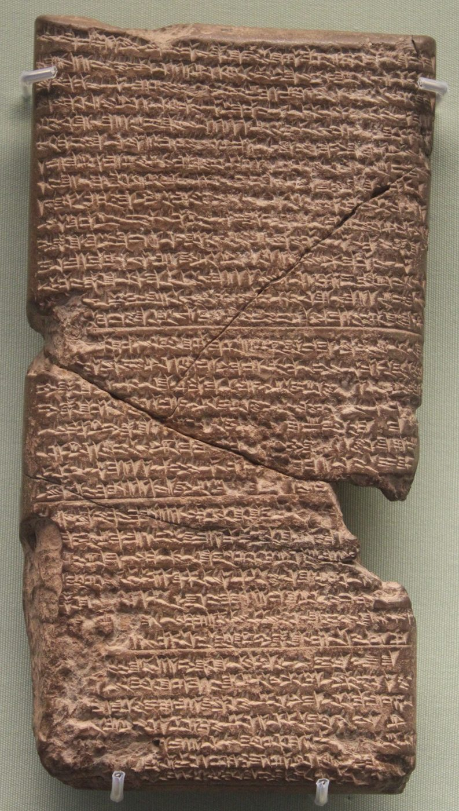

Unit 5 · Historical investigation · Lesson 14
Speaking about your investigation: ‘How do you know?’
How do you answer a question about your own investigation aloud, so that a listener hears what you found, how you know and how sure you are?
Year 11 Ancient History · Present with → or space · Read on a phone with R

Connect · 3 minutes · books closed · everyone writes · press K for the timer
What is the biggest limit of your evidence?
What is the biggest limit of the evidence for your own investigation?
Name what your evidence cannot show, and the evidence that could change it.
Lesson 13: a conclusion states its limits plainly, and each limit points to the evidence that could change it.
names what the evidence cannot show (a gap, a later date, one team, a silence) and the evidence that could change it. ‘There may be more evidence’ is not a limit.
On our class question the conclusion had three: the town may belong mainly to later kings · Merer’s papyri describe one team · on present evidence no worker has left a description of how the service felt, only an inspector’s work log. The conclusion adds no new evidence: it states limits and draws together reasons already argued in the sections.
Connect · 1 minute · the Lesson 13 review item the class found hardest
First, one thing to fix from the last review
Name the four parts of a report, in order, and say which one holds the thesis.
An introduction (the context, the question and the thesis); sections, each with a heading that states a claim; a conclusion; and a reference list. The thesis is in the introduction.
What makes a heading a claim heading?
It answers the sub-question, so a source could support or challenge it; a topic label only names a subject. It may be short if the topic sentence carries the hedge and the limit.
What is writing from notes, and how is patchwriting different?
Writing from notes means closing the source, writing a sentence from your own note, then checking it against the original. Patchwriting: swapping synonyms into a source’s sentence; still plagiarism.
Name three historical terms and give a one-line meaning of each.
For example: provenance, where evidence comes from (who wrote or found it, and when); corroboration, support for a claim from an independent source; secondary source, a later work about the time studied.
NESA defines investigate as ‘Plan, inquire into and draw conclusions about.’ What does an investigation therefore need?
A question, sources and a conclusion that answers the question.
Which is the better heading, and why: ‘Section 2’ or ‘Fed at the crown’s expense’?
‘Fed at the crown’s expense’. It states a claim a source could support or challenge. ‘Section 2’ only gives a number: it names no topic, let alone a claim.
Then books closed: ten questions and a verb sort.
Checkpoint · books closed · ten questions and the verb sort · 5 minutes · press K, click 5, then Start · answer in full sentences
Ten questions across the investigation
finding and judging sourcesacknowledging sourcessynthesis and interpretationsclaims and the reportquestions and hypotheses
- sourcesFor our class question, which is primary and which is secondary: Merer’s papyri, or Tallet and Marouard (2014)? Give a reason for each.
- sourcesName one search move and say what it does.
- sourcesA web page names no author. Give one move of lateral reading, and say what the P in OVPRL asks about a website.
- acknowledgingWhat is patchwriting, and why does a citation not fix it?
- acknowledgingWrite the in-text citation for Herodotus, Book 2, chapter 124, and for a page by Ancient Egypt Research Associates that shows no date.
- synthesisWhat is the difference between a summary and a synthesis of sources?
- claimsRewrite with one hedge, and say why proves is a weak word here: ‘The town’s bakeries prove that the crews were fed.’
- reportName the four parts of a report, in order, and say what a conclusion must not add.
- interpretationsWhat is an interpretation, and how does a representation differ?
- hypothesisWhat is a hypothesis, and what may research do to it?
Checkpoint · verb sort · 1 minute · the clock is still running
Sort the unit’s seven verbs by what they demand
Match each verb to what an answer must do. Write the pairs, for example 1–d.
- 1synthesise
- 2describe
- 3justify
- 4investigate
- 5examine
- 6propose
- 7evaluate
- ajudge against criteria: reliable or significant for what?
- bsay what it was like, with its features; no judgement needed
- cput forward an idea and say what would test it
- djoin several sources into one claim
- etake a position and support it with reasons and evidence
- flook closely at an interpretation: its claim, the evidence behind it and its assumptions
- gplan, find evidence and reach a conclusion that answers a question
The list of demands (a–g) is department advice about what each verb asks of an answer. Your Writing toolkit (booklet pages 3–4): the directive verbs.
Checkpoint · mark in a different colour · 1 mark each · both parts needed for the mark
Mark your answers: questions 1–5
| Q | Question | A strong answer |
|---|---|---|
| 1 | sources primary or secondary | Merer’s papyri are primary: logbooks kept by an inspector late in Khufu’s reign. Tallet and Marouard (2014) is secondary: the excavators, writing in 2014 about the site and the papyri. Which one a source is depends on your question: a source from the time studied is primary; a later work about it is secondary. |
| 2 | sources a search move | Any one: OR joins synonyms (Khufu OR Cheops) · quotation marks keep an exact phrase · site: searches one site or kind of site (site:livius.org) · a minus sign leaves a word out · filetype:pdf finds PDFs · a reference trail follows a good source’s references. |
| 3 | sources lateral reading; the P | Lateral reading, any one: leave the page after a quick scan · open new tabs and search the organisation’s or author’s name, not the page’s claims · read what others say about them · then decide what the page is reliable for. The P (Purpose) asks why the page was made: to inform, persuade, sell, raise funds or entertain. The excavators’ page informs, and it also asks for donations. |
| 4 | acknowledging patchwriting | Patchwriting is swapping synonyms into a source’s sentence. A citation credits the idea, not the borrowed sentence: the words and the structure are still the source’s, so it is still plagiarism. (A paraphrase changes the structure as well as the words, then cites.) |
| 5 | acknowledging two citations | (Herodotus 2.124): author, book and chapter, with no year, because the numbers belong to the text, not to one edition. (Ancient Egypt Research Associates n.d.): the organisation that runs the site is the author, and n.d. means no date (a © year in the footer belongs to the whole site). |
Checkpoint · mark in a different colour · 1 mark each · both parts needed for the mark
Mark your answers: questions 6–10
| Q | Question | A strong answer |
|---|---|---|
| 6 | synthesis summary or synthesis | A summary reports sources one at a time and leaves the reader to join them. A synthesis builds one claim from several sources, shows them in conversation with connectives, and says what the evidence cannot show. |
| 7 | claims a hedge | One medium hedge (suggests, probably, is likely to), for example: ‘The town’s bakeries suggest that the crews were fed.’ Proves is an overclaim: it asks one source to carry more than it can. Not may possibly suggest: stacked hedges commit to nothing. (A hedge sets how sure a claim is; a degree of extent, such as largely, answers how far.) |
| 8 | report parts; the conclusion | Introduction · sections · conclusion · reference list (each section has a claim heading). A conclusion adds no new evidence, so no new citation: it draws together reasons already argued in the sections, keeps the thesis’s degree and states the limits. |
| 9 | interpretations interpretation or representation | An interpretation is a historian’s evidence-based explanation of the past. A representation is a depiction of the past (a painting, a film, a reconstruction) shaped by its maker’s time and purpose. |
| 10 | hypothesis a hypothesis | A hypothesis is a provisional, testable answer to your question. Research may confirm, modify or reject it. |
Checkpoint · mark in a different colour · 1 mark for each correct pair · out of 7
Mark your verb sort
| Verb | NESA, Glossary of key words | The answer must … (department advice) |
|---|---|---|
| 1 synthesise | ‘Putting together various elements to make a whole.’ | d · join several sources into one claim |
| 2 describe | ‘Provide characteristics and features.’ | b · say what it was like, with its features; no judgement needed |
| 3 justify | ‘Support an argument or conclusion.’ | e · take a position and support it with reasons and evidence |
| 4 investigate | ‘Plan, inquire into and draw conclusions about.’ | g · plan, find evidence and reach a conclusion that answers a question |
| 5 examine | ‘Inquire into.’ | f · look closely at an interpretation: its claim, the evidence behind it and its assumptions |
| 6 propose | ‘Put forward (for example a point of view, idea, argument, suggestion) for consideration or action.’ | c · put forward an idea and say what would test it |
| 7 evaluate | ‘Make a judgement based on criteria. Determine the value of.’ | a · judge against criteria: reliable or significant for what? |
Checkpoint · 1½ minutes · your score, skill by skill
Tally your score by skill
| Skill | ✓ or ✗ for each question | If you missed it, revise |
|---|---|---|
| finding and judging sources | Q1 Q2 Q3 | Lessons 1, 3 and 4 · re-teach card: Finding and judging sources |
| acknowledging sources | Q4 Q5 | Lessons 5 and 6 · re-teach card: Acknowledging sources |
| synthesis and interpretations | Q6 Q9 | Lessons 7 and 8 · re-teach card: Synthesis and interpretations |
| claims and the report | Q7 Q8 | Lessons 9, 10 and 13 · re-teach card: Claims and the report |
| questions and hypotheses | Q10 | Lessons 1 and 2 · re-teach card: Questions and hypotheses |
| directive verbs | sort / 7 | Lessons 1, 4, 7 and 8 (describe and justify: earlier units) · re-teach card: Directive verbs |
Hands up for each skill where you missed a question, as it is called. Your teacher notes the two most-missed skills.
Circle every skill you missed. Tonight, read its re-teach card (Practice and review, at the end of this lesson), then answer that lesson’s quick checks in Read mode.
Learning intentions and success criteria · 2 minutes
Today’s goals
- answer questions about our own investigation in an academic spoken register
- support each answer with named evidence
- answer ‘How do you know?’ with a claim, a named source, what it shows and how sure I am
- recast a spoken-like answer into academic speech
- sort the unit’s directive verbs by what they demand
Syllabus outcomes: AH-11-07 communicates historical understanding, applying historical knowledge, terms and concepts · AH-11-08 plans and conducts historical investigations and presents conclusions, using evidence from a range of sources. Life Skills: AH-LS-11 communicates information about the past using historical terms and concepts · AH-LS-12 participates in a historical investigation.
Note-making · the routine for the whole course
How to structure your notes
questions and key terms, written after
short phrases, arrows (→ leads to), abbreviations (n.d. = no date; c. = about; BCE = Before the Common Era)
- 1A new lesson, a new pageA cue column about a quarter of the page wide; title and date at the top; room for a summary at the bottom.
- 2Listen and look, then writeDon’t copy while a slide is being explained. Phrases, not sentences; a source for every claim.
- 3Today your page holds three thingsYour checkpoint tally · the evidence answer in four moves · how spoken-like talk becomes academic speech.
- 4Write the cue questions afterwardsUse exam verbs: describe, explain, assess. To revise, cover your notes and answer the cues.
- 5Finish with a three-sentence summaryOne notes checkpoint today: what an oral examination asks, and how to answer it.
Key vocabulary · add to the unit word wall
Words for speaking about your findings
| Speaking terms | Meaning |
|---|---|
| Viva voce | An oral examination in which you answer questions about your own work. |
| Register | How formal language is; a viva uses an academic spoken register. |
| Signposting (spoken) | Words that guide a listener: ‘My first finding…’, ‘The strongest evidence is…’ |
| Added today | Meaning |
| Evidence answer | An answer to a How do you know question: a claim, a named source with its provenance, what it shows and how sure you are. |
| Recast | Say an idea again in more precise, more formal words, keeping its meaning. |
| Terms from earlier lessons | Meaning |
|---|---|
| Provenance | Where a piece of evidence comes from: who wrote or found it, and when. |
| Hedge (modality) | A word or phrase that matches a claim’s certainty to the evidence: probably, suggests, on present evidence. |
| Attribute | To say whose view it is, by name, with a verb that fits how sure they are. |
| Limitation | What a source, or the evidence as a whole, cannot show. |
1 · I do · what an oral examination of your own investigation asks · then cold call
A viva voce, and three kinds of question
An oral examination of your own investigation: short, unseen questions, and answers that show you did the thinking.
You answer aloud, in your own words. A good answer shows how you know, not only what you found.
Today is practice. Your classmates ask the questions, about your own investigation.
| Kind of question | It asks you to … | A practice question on the class investigation |
|---|---|---|
| Evidence | show how you know a claim: name a source and say what it shows | How do you know the crews were fed? |
| Contestability | say what would change your judgement, and which way | What would change your mind about how far Herodotus’s account is supported? |
| Process | explain how your research changed your answer | How did your research change your first idea about who built the Great Pyramid? |
Cold call: which kind asks you to name a source, and why does it matter which one you name?
The evidence kind. Only a named source lets a listener check your claim, and its provenance (who made it, and when) tells them how far to trust it. Today we practise this kind; Lesson 15 adds the other two.
1 · I do · read two answers to the same question · 2 minutes · then cold call
Which answer would you rather hear?
Both answers are teacher-written for this lesson, on the class investigation. Neither is a student’s.
Questioner How do you know the crews were fed?
SpeakerUm, basically they weren’t slaves ’cause they got fed and stuff. I read it online. There was, like, a town with bakeries and bones and it proves they were all fed really well. So yeah, they weren’t starving or whatever.
Questioner How do you know the crews were fed?
SpeakerMy strongest evidence is the builders’ town at Giza. Its excavators, Ancient Egypt Research Associates, report bakeries and kitchens there, and the Ministry of Tourism and Antiquities reports a large quantity of animal bones, so together they suggest that the crown fed its workforce. I am less sure that these were Khufu’s crews, because the town may belong mainly to later kings. A second source is the Wadi al-Jarf papyri, from late in Khufu’s reign and reported by Tallet and Marouard in 2014, which include accounts of regular food deliveries, although they probably come from one team’s archive.
Cold call: which answer would you rather hear, and what are two differences?
B names its sources and who made them, says what each shows (report, suggest, include), says how sure it is, and speaks in an academic register. A names no source (I read it online), treats the bakeries and the bones as one source’s evidence, overclaims (proves), claims something about the crews’ status that food cannot show, and is full of fillers.
1 · I do · think aloud through Answer B · 2 minutes
The evidence answer: claim, source, what it shows, how sure
My strongest evidence is the builders’ town at Giza. Its excavators, Ancient Egypt Research Associates, report bakeries and kitchens there, and the Ministry of Tourism and Antiquities reports a large quantity of animal bones, so together they suggest that the crown fed its workforce. I am less sure that these were Khufu’s crews, because the town may belong mainly to later kings. A second source is the Wadi al-Jarf papyri, from late in Khufu’s reign and reported by Tallet and Marouard in 2014, which include accounts of regular food deliveries, although they probably come from one team’s archive.
A named source: an author or organisation, and a title for a page or book. Not ‘I read it online’
Provenance: who made it, in what role, and when
What it shows, and the claim: a precise verb (reports, suggest, include), never proves, then the claim it supports
How sure: a hedge, and a limit with because or although
Signposting: words that guide a listener to the next point
Notes checkpoint
Speaking about your findings
2 · Writing focus · speaking · 6 minutes · I do → We do → apply · on the class investigation
Writing focus: from spoken-like to academic speech
An academic spoken answer signposts, attributes its claims, uses precise terms and hedges its conclusion.
Spoken-likeUm, basically they weren’t slaves ’cause they got fed and stuff.
Recast · written for this lesson
My strongest evidence is the builders’ town at Giza. Its excavators, Ancient Egypt Research Associates, report bakeries and kitchens, and the Ministry of Tourism and Antiquities reports a large quantity of animal bones. These suggest that the crown fed its crews, so Herodotus’s picture of a people brought to ‘utter misery’ may overstate their hardship, although the town may belong mainly to later kings.
Signpost: tell the listener where you are
Attribute: name who reports each piece of evidence
Precise term: overstate, not stuff or legit
Hedge and limit: suggest, may, although … may
Recast this answer to How do you know the town’s excavators can be trusted? Say it aloud to a partner, then listen:
The site was pretty legit so I trusted it.
I rely on the page for what the excavators found at the town, because it comes from Ancient Egypt Research Associates, the team that has dug there since 1988. It is their own summary, though, so I treat who the builders were as their interpretation.
Say one evidence answer aloud about a claim in your own investigation: ‘My strongest evidence is …: it suggests …, so …, although …’ Name the source and who made it. Avoid um, like, basically, stuff. Your Writing toolkit (booklet pages 3–4): the modality scale.
3 · Mock viva · 24 minutes · three rounds of 8 minutes · press K, click 8, then Start for each round
Your triad: speaker, questioner, observer
Answer about your own investigation, starting from a claim in your own section or conclusion. Use the frame:
‘My strongest evidence is …: it suggests …, so …, although …’
Ask the speaker how they know one claim. Practice stems:
- How do you know …?
- Which source tells you that?
- Who made it, and when?
- What does it show, exactly?
- How sure are you, and why?
Extension: How would that writer know?
Listen. Tick the observer’s checklist, ‘Listen for five things’: named source · provenance · what it shows · how sure · register. In the feedback minutes, give one strength and one next step.
Every one of you speaks once. For today’s practice, keep your annotated source list beside you. The stems are practice only: your questioner may ask others. Don’t correct each other’s facts: listen for how the answer is built.
3 · Mock viva · the observer’s checklist · one tick for each point you heard
Listen for five things
| Listen for | You hear … | Tick |
|---|---|---|
| Named source | an author or organisation, and a title; not ‘a website’ or ‘I read it online’ | |
| Provenance | who made it, in what role, and when | |
| What it shows | a precise verb (reports, suggests, records), the claim, never proves | |
| How sure | a hedge, and a limit with because or although | |
| Register | a signpost, attributed claims, precise terms; no um, like, basically, stuff |
‘One thing you did well was … (the point on the checklist). One thing to add next time is …’
One for each answer you hear in the round. Leave a box empty when you did not hear the point.
Check · 4 minutes · share one strong answer you heard
What made that answer strong?
Two or three of you share one strong answer you heard in your triad (with the speaker’s permission, and no names). Say what it did.
Which points on the checklist did it hit, and what could it add?
the checklist point and the words that earned it: for example ‘it named the source and who made it’ or ‘it said how sure it was with although’. It also names one thing the answer could still add. It does not say ‘it was good’.
Exit ticket · 4 minutes · on a slip or sticky note · before you leave
One answer I will strengthen
One answer I will strengthen, and the source I will name.
One answer I will strengthen is … The source I will name is … (author or organisation, title, date), and I will say that it was made by …
- I can answer How do you know? with a claim, a named source, what it shows and how sure I am.
- I can recast a spoken-like answer into academic speech.
- I can sort the unit’s directive verbs by what they demand.
one specific answer from your own investigation (not ‘all of them’), one named source with an author or organisation, a title and a date, and one thing you will add: who made it, what it shows, a hedge and a limit, or a more formal word.
Next lesson: defending a conclusion, and what would change your mind.
Finish your notes If time · or at home
Summary: three sentences on speaking about your findings
- What is a viva voce, and what are the three kinds of question you can practise?
- What are the four moves of an evidence answer?
- What makes speech academic rather than spoken-like?
A viva voce is an oral examination in which I answer short, unseen questions about my own investigation, so that I show how I know; the kinds of question I can practise ask for evidence, for what would change my judgement, and for how my research changed my answer. An evidence answer makes four moves: it makes a claim, names a source with its provenance, says what that source shows, and says how sure I am, with a hedge and a limit. Academic speech signposts what comes next, attributes each claim to the person who makes it, uses precise terms instead of fillers, and hedges its conclusions.
Practice and review · 1 of 4 · homework or revision · true, false, justify
True or false? Justify your answer
- 1A viva voce is an oral examination of your own work, with short questions you have not seen. True — the answers show how you know, not just what you found.
- 2A strong answer to How do you know? can say ‘I read it online’ as its source. False — name an author or organisation and a title, and say who made it and when, so a listener can judge it.
- 3‘The bakeries prove the crews were fed’ is a well-hedged claim. False — proves overclaims from one source. Suggests or probably matches what the evidence can carry.
- 4If the town’s bakeries and animal bones suggest the crown fed its crews, they also show the crews were legally free. False — food shows that the crown supplied the crews; it does not show their legal status. Say what each source shows.
- 5Oral academic register means reading your report aloud, word for word. False — it means speaking precisely: signposting, attributing claims, using precise terms and hedging conclusions, in words made for a listener.
- 6The observer’s job is to correct the speaker’s facts. False — the observer listens for how the answer is built (the checklist) and gives one strength and one next step.
Practice and review · 2 of 4 · homework or revision · speaking · say each answer aloud first
Recast two spoken-like answers on the Assyrian question
The question is the closed practice question, Why did the Assyrian Empire collapse in the late 7th century BCE? You are asked How do you know Nineveh fell to an alliance? A speaker answers: ‘Um, so basically the Babylonians and the Medes got it ’cause it’s on this old tablet thing.’ Recast it as an evidence answer: a named source, who made it, what it shows and how sure you are.
My strongest evidence is the Fall of Nineveh Chronicle, a Babylonian chronicle on a tablet written about 550–400 BCE, in Livius.org’s translation (2020). It records the Babylonian and Median kings’ armies meeting and then besieging Nineveh for three months, so the alliance probably took the city, although the chronicle cannot show how far drought had already weakened Assyria.
A speaker is asked How do you know drought weakened Assyria? and answers: ‘The cave study was pretty legit so I trusted it.’ Recast it: rely on the study for what it can show, and say what you treat as the authors’ own argument.
I rely on Sinha and colleagues (2019) for what the cave record shows, because it was published in a scientific journal, Science Advances, and dates the droughts precisely. But a climate record shows drought, not what drought did to Assyria, so I treat their link to the collapse as their argument, and I say only that decades of drought probably weakened Assyria’s farming.

Practice and review · 3 of 4 · re-teach cards · read the card for each skill you missed
Re-teach cards: one for each skill
Is a source primary or secondary? How do you check a website?
Primary: from the time studied (Merer’s papyri); secondary: a later work about it (Tallet and Marouard 2014). Which one it is depends on your question. Search moves: OR, quotation marks, site:, a minus sign, filetype:pdf, reference trails. Check a website by lateral reading (leave it, open new tabs, see who is behind it); OVPRL’s P asks why it was made.
What is patchwriting? How do you cite a text and a page with no date?
Patchwriting swaps synonyms into a source’s sentence; a citation credits the idea, not the borrowed sentence. Cite an ancient text by author, book and chapter, with no year: (Herodotus 2.124). Cite an undated page by its organisation and n.d. Every citation is listed and every entry is cited: six sources cited, six entries.
Summary or synthesis? Interpretation or representation?
A summary reports sources one at a time; a synthesis builds one claim from several sources, joined by connectives, and says what the evidence cannot show. An interpretation is a historian’s evidence-based explanation; a representation is a depiction of the past shaped by its maker’s time and purpose. Corroboration needs independent sources.
How sure should a claim be? What does a conclusion do?
Match the hedge to the evidence: low (may), medium (probably, suggests), high (shows); one hedge per claim as a rule of thumb. A degree of extent (largely, only in part) answers how far: it is not a hedge, and a Judge carries both. A conclusion adds no new evidence: it keeps the thesis’s degree, draws together reasons already argued and states the limits.
What is a hypothesis? What makes a question investigable?
A hypothesis is a provisional, testable answer; research may confirm, modify or reject it. A question is investigable if it is arguable, focused and answerable from sources, and clear of Year 12 options.
What does each of the seven verbs demand?
Synthesise: join sources into one claim. Describe: say what it was like. Justify: support a position. Investigate: plan, find evidence, conclude. Examine: look closely at an interpretation. Propose: put forward an idea and say what would test it. Evaluate: judge against criteria. Your Writing toolkit (booklet pages 3–4): the directive verbs.
Practice and review · 4 of 4 · homework or revision · cover your notes and answer from memory
Quick checks
- Describe what a viva voce is. An oral examination of your own work: short, unseen questions, and answers that show how you know, not just what you found.
- Name three kinds of question you can practise and what each asks. Evidence: how do you know? Contestability: what would change your judgement, and which way? Process: how did your research change your answer?
- Explain the four moves of an evidence answer. A claim; a named source with its provenance (who made it, and when); what it shows, with a precise verb; and how sure you are, with a hedge and a limit.
- What is the difference between spoken-like talk and academic speech? Spoken-like talk uses fillers and vague words (basically, stuff). Academic speech signposts, attributes each claim, uses precise terms and hedges its conclusions.
- Why can bakeries and animal bones not show whether crews were free? They suggest that the crown fed its crews; food does not show anyone’s legal status. Say only what each source shows.
- What goes wrong if an answer says proves? It overclaims: it asks one source to carry more than it can. Choose one hedge that matches the evidence, such as suggests or probably.
Sources and credits
Where everything comes from
NESA, Glossary of key words (the definitions of synthesise, describe, justify, investigate, examine, propose and evaluate, quoted word for word). NESA, Ancient History 11–12 Syllabus (2024). © NESA.
Facts: Ancient Egypt Research Associates, “The Lost City of the Pyramids (Heit el-Ghurab)”; Egypt’s Ministry of Tourism and Antiquities, “Workers’ Town and Cemetery”; P. Tallet and G. Marouard, “The Harbor of Khufu on the Red Sea Coast at Wadi al-Jarf, Egypt”, Near Eastern Archaeology 77(1) (2014), doi:10.5615/neareastarch.77.1.0004; Herodotus, Histories 2.124, A. D. Godley’s translation (Loeb, 1920–22), as revised by the Perseus Digital Library (CC BY-SA 3.0 US); Livius.org, “ABC 3 (Fall of Nineveh Chronicle)”; A. Sinha et al., “Role of climate in the rise and fall of the Neo-Assyrian Empire”, Science Advances 5(11) (2019), doi:10.1126/sciadv.aax6656 (open access). The two answers, the recasts, the exercises and the models are written for this lesson. Every page was checked on 27 November 2026.
Outcomes and content: NSW Education Standards Authority (NESA), Ancient History 11–12 Syllabus (2024). © NESA.
- The Giza pyramids from a balloon, photographed by Eduard Spelterini, 1904 · Photo: Eduard Spelterini · Public domain · source
- Clay tablet with part of the Babylonian Chronicle, the years 616–609 BCE (British Museum, 1896,0409.6) · Photo: Zunkir · CC BY-SA 4.0 · source


All images are public domain or openly licensed, and were resized or cropped for the web. Each is shared under the licence shown.